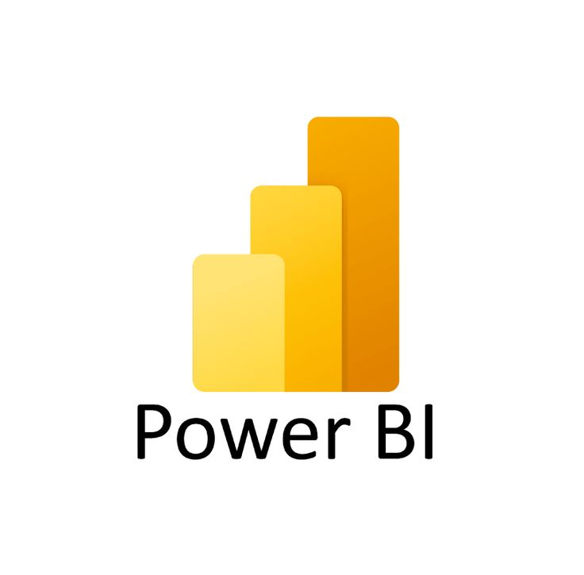

Hi, My name is Rashmi
and I'm a passionate
Timelines

C Programming (2022-2023)
In first semester of college,
we had a course called PDS where
we learnt about C programming.

Python Programming (2023-2024)
During semester breaks of 1st year,
I started learning python
programming.

Web Development (2024)
Started learning how to build
websites with HTML, CSS, Javascript.

SEQUEL/SQL (2024)
Learned how to use SQL to work
with relational databases.

Power BI (2024)
Learned how to use Power BI to
visualize datasets.